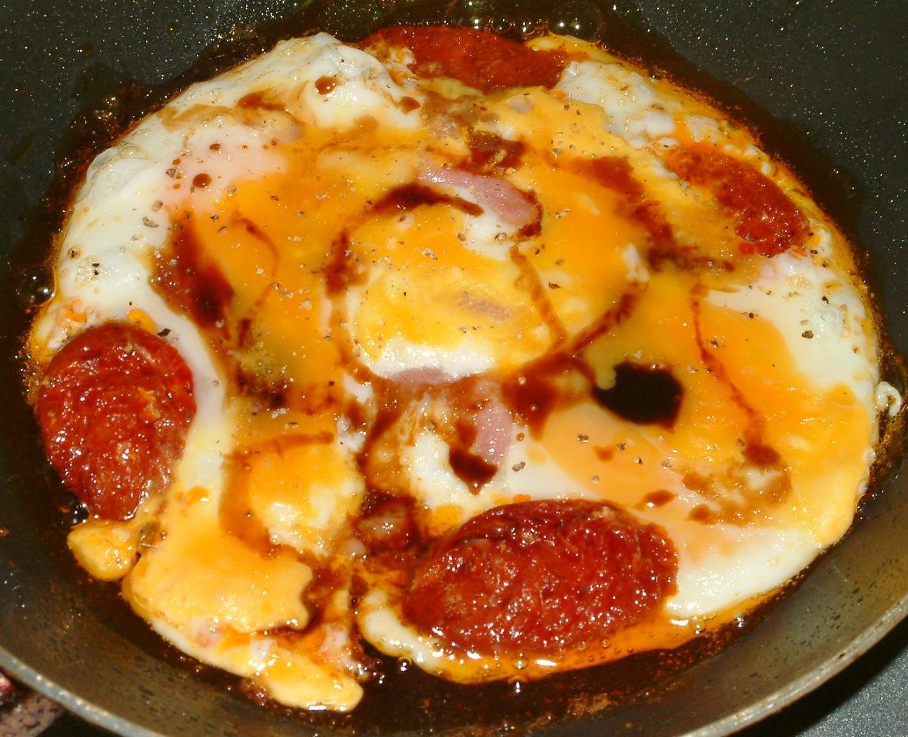

Chorizo met ei

Ingrediënten
- 1 plakje bacon
- Een paar plakjes chorizoworst
- 2 eieren
- Zoete sojasaus
- Witte peper
- Broodje toast
Bereiding
- Doe olie in een kleine pan en een plakje bacon op een zacht vuurtje.
- Verdeel plakjes chorizo er omheen.
- Breek 2 eieren over het vlees en breek de dooiers.
- Bak de eieren tot ze bijna stollen, kruid met peper en voeg er een straaltje sojasaus aan toe in de vorm van een spiraal.
- Laat het nog even nagaren.
- Beleg de toast eventueel met sla en voeg het ei met chorizo toe.